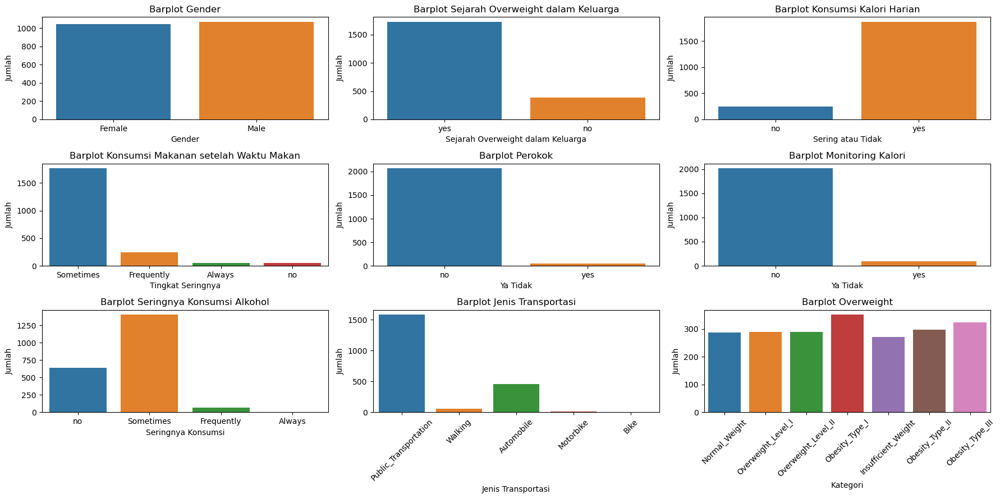

Memprediksi atau mengukur tingkat sebuah tipe obesitas di masyarakat dengan menggunakan model prediksi. Tingkat obesitas dibedakan menjadi tujuh tipe, yaitu sebagai berikut:
Insufficient Weight
Normal Weight
Overweight Level I
Overweight Level II
Obesity Type I
Obesity Type II
Obesity Type III
Tujuan lainnya adalah memberikan informasi lebih mengenai bahaya dari masing - masing tipe obesitas serta bagaimana cara menghindari penyakit obesitas tersebut, semua ini akan ditampilkan di dalam model prediksi.
1.22. Fitur yang digunakan
Pada prediksi tingkat obesitas diatas terdapat fitur - fitur yang digunakan untuk mendapatkan hasil prediksi, diantaranya :
Gender (Jenis Kelamin)
Age (Usia):
Family (Riwayat Keluarga dengan Obesitas)
FCVC (Frequency of consumption of vegetables)
NCP (Number of main meals)
CAEC (Consumption of food between meals)
Smoke (Smoking habit)
CH20 (Consumption of water daily)
SCC (Calories consumption monitoring)
FAF (Physical activity frequency)
TUE (Time using technology devices)
CALC (Use of a caloric calculator)
MTRANS (Mode of transportation)
Height (Tinggi)
Weight (Berat)
FAVC (Frequent consumption of high caloric food)
#
Data Understanding - - -
Informasi yang bisa didapatkan di Data Understanding ini adalah : 1. Type Data Pada Semua Fitur 2. Deskripsi Dataset Beserta Fitur 3. Eksplorasi Data (Grafikan Fitur) 4. Proporsi Setiap Kelas 5. Mengidentifikasi Missing Value 6. Mengidentifikasi Data Outlier
1.31. Type Data Pada Semua Fitur
Data statistik adalah dapat diartikan sebagai bagian data tunggal, data yang memiliki pesan informasi yang faktual, yang terekam untuk tujuan analisis. Maksudnya data statistik adalah, data yang dapat dijadikan sumber informasi. Dimana data ini berasal dari hasil penyajian, interpretasi dan hasil analisis data. Berikut adalah Jenis - Jenis Type Data yang digunakan untuk nanti mengidentifikasikan fitur dataset ini : 1. Data Nominal : Berbeda lagi dengan data nominal. Data nominal adalah data yang sering digunakan untuk menghitung hasil statistik kualitatif. Data nominal digunakan untuk membantu dalam memberikan label pada variabel tanpa memberikan nilai numerik. Dimana numerik dapat diganti dengan huruf, simbol, jenis kelamin atau menggunakan kata lain. 2. Data Rasio : Data Rasio memiliki nilai yang hampir sama dengan nilai interval. Jika data interval tidak memiliki “0” yang benar, maka pada data rasio memiliki nilai “0” mutlak. 3. Data Interval : Data Interval adalah data statistik yang diperoleh dari hasil skala pengukuran. Data interval ternyata termasuk ke dalam data data kontinu. Secara perhitungan, data interval dapat ditambahkan ataupun dikurangi, namun tidak dapat dikalikan, dibagi ataupun dihitung rasionya, karena tidak memiliki nilai “0” yang benar. 4. Data Ordinal : Adapun yang disebut dengan data ordinal, atau data yang yang sering digunakan untuk data kualitatif. Dari segi penyajian, data ordinal banyak digunakan dalam bentuk diagram lingkaran dan diagram batang, dan sering ditafsirkan menggunakan banyak alat visualisasi. Dalam data ordinal, penyajian data dapat dituliskan dalam banyak bentuk. Bisa ditulis dalam bentuk persentil, rentang interkuartil untuk meringkas data, dan ada juga yang menggunakan median dan mode.
****
Berikut Type data di setiap fitur di dataset :
1. Gender (Jenis Kelamin): Ini adalah data nominal karena jenis kelamin adalah label kualitatif yang hanya mengidentifikasi kategori “Laki-laki” atau “Perempuan.” Tidak ada urutan atau peringkat numerik. 2. Age (Usia): Ini adalah data rasio karena usia diukur dalam tahun, dan Anda dapat melakukan operasi matematis seperti penambahan, pengurangan, perkalian, dan pembagian terhadap usia. Nilai “0” yang benar juga ada, misalnya, ketika seseorang berusia 0 tahun. 3. Family (Riwayat Keluarga dengan Obesitas): Ini adalah data nominal karena hanya memberi label “Ya” atau “Tidak” untuk mengidentifikasi keberadaan atau ketiadaan riwayat obesitas dalam keluarga. 4. FCVC (Frequency of consumption of vegetables): Ini adalah data interval karena meskipun Anda mengukur frekuensi konsumsi sayuran dalam bentuk angka, Anda tidak bisa mengalikan atau membagi nilai-nilai ini. Tidak ada nilai “0” yang benar. 5. NCP (Number of main meals): Ini adalah data interval karena ini mewakili jumlah makanan utama yang dikonsumsi dalam sehari dalam bentuk angka. Namun, tidak ada nilai “0” yang benar. 6. CAEC (Consumption of food between meals): Ini adalah data nominal karena memberi label kebiasaan makan di antara waktu makan utama dengan kategori seperti “Selalu,” “Sering,” “Kadang-kadang,” atau “Tidak pernah.” 7. Smoke (Smoking habit): Ini adalah data nominal karena hanya memberi label pada kebiasaan merokok dengan kategori “Ya” atau “Tidak.” 8. CH20 (Consumption of water daily): Ini adalah data interval karena Anda mengukur seberapa banyak air yang dikonsumsi dalam bentuk angka, meskipun tidak ada nilai “0” yang benar. 9. SCC (Calories consumption monitoring):Ini adalah data nominal karena hanya memberi label apakah seseorang memantau asupan kalori mereka dengan kategori “Ya” atau “Tidak.” 10. FAF (Physical activity frequency): Ini adalah data interval karena mencerminkan frekuensi berpartisipasi dalam aktivitas fisik selama hari kerja, meskipun tidak ada nilai “0” yang benar. 11. TUE (Time using technology devices): Ini adalah data interval karena mencerminkan jumlah waktu yang dihabiskan menggunakan perangkat teknologi, meskipun tidak ada nilai “0” yang benar. 12. CALC (Use of a caloric calculator): Ini adalah data nominal karena hanya memberi label penggunaan kalkulator kalori dengan kategori seperti “Selalu,” “Sering,” “Kadang-kadang,” atau “Tidak pernah.” 13. MTRANS (Mode of transportation): Ini adalah data nominal karena hanya memberi label pada alat transportasi yang digunakan dengan kategori seperti “Mobil,” “Sepeda Motor,” “Sepeda,” “Transportasi Umum,” atau “Berjalan.” 14. Height (Tinggi): Ini adalah data rasio karena diukur dalam sentimeter, dan Anda dapat melakukan operasi matematis seperti pengurangan dan pembagian terhadap tinggi. Nilai “0” yang benar ada, misalnya, ketika seseorang memiliki tinggi 0 cm (yang sangat jarang terjadi). 15. Weight (Berat): Ini juga adalah data rasio karena diukur dalam kilogram, dan Anda dapat melakukan operasi matematis seperti pengurangan dan pembagian terhadap berat. Nilai “0” yang benar ada, misalnya, ketika seseorang memiliki berat 0 kg (yang juga sangat jarang terjadi). 16. FAVC (Frequent consumption of high caloric food): Ini adalah data nominal karena hanya memberi label pada apakah seseorang sering mengonsumsi makanan tinggi kalori dengan kategori “Ya” atau “Tidak.”
import numpy as npimport pandas as pddata = pd.read_csv('data-obesitas.csv')data
Gender
Age
Height
Weight
family_history_with_overweight
FAVC
FCVC
NCP
CAEC
SMOKE
CH2O
SCC
FAF
TUE
CALC
MTRANS
NObeyesdad
0
Female
21.000000
1.620000
64.000000
yes
no
2.0
3.0
Sometimes
no
2.000000
no
0.000000
1.000000
no
Public_Transportation
Normal_Weight
1
Female
21.000000
1.520000
56.000000
yes
no
3.0
3.0
Sometimes
yes
3.000000
yes
3.000000
0.000000
Sometimes
Public_Transportation
Normal_Weight
2
Male
23.000000
1.800000
77.000000
yes
no
2.0
3.0
Sometimes
no
2.000000
no
2.000000
1.000000
Frequently
Public_Transportation
Normal_Weight
3
Male
27.000000
1.800000
87.000000
no
no
3.0
3.0
Sometimes
no
2.000000
no
2.000000
0.000000
Frequently
Walking
Overweight_Level_I
4
Male
22.000000
1.780000
89.800000
no
no
2.0
1.0
Sometimes
no
2.000000
no
0.000000
0.000000
Sometimes
Public_Transportation
Overweight_Level_II
...
...
...
...
...
...
...
...
...
...
...
...
...
...
...
...
...
...
2106
Female
20.976842
1.710730
131.408528
yes
yes
3.0
3.0
Sometimes
no
1.728139
no
1.676269
0.906247
Sometimes
Public_Transportation
Obesity_Type_III
2107
Female
21.982942
1.748584
133.742943
yes
yes
3.0
3.0
Sometimes
no
2.005130
no
1.341390
0.599270
Sometimes
Public_Transportation
Obesity_Type_III
2108
Female
22.524036
1.752206
133.689352
yes
yes
3.0
3.0
Sometimes
no
2.054193
no
1.414209
0.646288
Sometimes
Public_Transportation
Obesity_Type_III
2109
Female
24.361936
1.739450
133.346641
yes
yes
3.0
3.0
Sometimes
no
2.852339
no
1.139107
0.586035
Sometimes
Public_Transportation
Obesity_Type_III
2110
Female
23.664709
1.738836
133.472641
yes
yes
3.0
3.0
Sometimes
no
2.863513
no
1.026452
0.714137
Sometimes
Public_Transportation
Obesity_Type_III
2111 rows × 17 columns
1.42. Deskripsi Dataset Beserta Fitur
Dataset ini mencakup data estimasi tingkat obesitas pada individu dari negara Meksiko, Peru dan Kolombia, berdasarkan kebiasaan makan dan kondisi fisiknya. Data tersebut berisi 17 atribut dan 2111 record, record tersebut diberi label dengan variabel kelas NObesity (Tingkat Obesitas), yang memungkinkan klasifikasi data menggunakan nilai : - Berat Badan Tidak Cukup ( Ini mengindikasikan bahwa seseorang memiliki BMI di bawah kisaran yang dianggap sehat. Orang dengan berat badan tidak cukup mungkin mengalami masalah kesehatan karena kekurangan gizi ) - Berat Badan Normal ( Ini mengindikasikan bahwa seseorang memiliki BMI dalam kisaran yang dianggap sehat. Ini adalah kategori yang diinginkan karena biasanya memiliki risiko lebih rendah terhadap penyakit terkait obesitas ) - Kegemukan Tingkat I( Seseorang dianggap mengalami obesitas tingkat I jika BMI mereka berada dalam rentang tertentu yang menunjukkan peningkatan berat badan yang berlebihan. Ini dapat berisiko terhadap masalah kesehatan seperti diabetes tipe 2 dan penyakit jantung ) - Kegemukan Tingkat II ( Ini menunjukkan tingkat obesitas yang lebih serius. Orang dengan obesitas tingkat II memiliki BMI yang lebih tinggi dan berisiko lebih tinggi terhadap masalah kesehatan serius ) - Obesitas Tipe I ( Ini adalah kategori obesitas yang lebih lanjut, menunjukkan peningkatan yang signifikan dalam berat badan dan risiko kesehatan yang lebih tinggi ) - Obesitas Tipe II ( Orang dengan obesitas tipe II memiliki BMI yang sangat tinggi dan berisiko serius terhadap berbagai penyakit, termasuk penyakit jantung, tekanan darah tinggi, dan diabetes ) - Obesitas Tipe III ( Ini adalah tingkat obesitas yang paling tinggi. Orang dengan obesitas tipe III memiliki BMI yang sangat ekstrem dan menghadapi risiko tinggi terhadap berbagai komplikasi kesehatan serius )
Klasfikasi diatas bisa ditentukan karena terdapar 16 atribut yang digunakan dalam mengklasfikasi, yaitu : 1. Gender (Jenis Kelamin): Ini mengidentifikasi jenis kelamin seseorang, dan biasanya memiliki dua nilai: “Laki-laki” dan “Perempuan” 2. Age (Usia): Ini adalah usia seseorang dalam tahun. Atribut ini mencerminkan usia pengguna. 3. Family (Riwayat Keluarga dengan Obesitas): Ini mengukur apakah seseorang memiliki riwayat obesitas dalam keluarganya. Nilai-nilai umumnya adalah “Ya” jika ada riwayat obesitas dalam keluarga dan “Tidak” jika tidak. 4. FCVC (Frequency of consumption of vegetables): Ini mengukur seberapa sering seseorang mengonsumsi sayuran. Nilai-nilai umumnya adalah angka yang mencerminkan frekuensi konsumsi sayuran. Semakin tinggi nilai FCVC, semakin sering seseorang mengonsumsi sayuran. 5. NCP (Number of main meals): Ini adalah jumlah makanan utama yang dikonsumsi oleh seseorang dalam sehari. Ini adalah angka yang mencerminkan jumlah kali seseorang makan makanan utama dalam sehari. 6. CAEC (Consumption of food between meals): Ini mengukur kebiasaan konsumsi makanan di antara waktu makan utama. Ini bisa berupa “Selalu”, “Sering”, “Kadang-kadang”, atau “Tidak pernah”. 7. Smoke (Smoking habit): Ini mencerminkan apakah seseorang adalah perokok atau tidak. Nilainya bisa “Ya” jika perokok dan “Tidak” jika bukan. 8. CH20 (Consumption of water daily): Ini mengukur seberapa banyak air yang dikonsumsi seseorang setiap hari. 9. SCC (Calories consumption monitoring): Ini mengindikasikan apakah seseorang memantau asupan kalori mereka. Nilainya bisa “Ya” jika memantau dan “Tidak” jika tidak. 10. FAF (Physical activity frequency): Ini mengukur seberapa sering seseorang berpartisipasi dalam aktivitas fisik selama hari kerja. 11. TUE (Time using technology devices): Ini mencerminkan seberapa banyak waktu yang dihabiskan seseorang menggunakan perangkat teknologi. 12. CALC (Use of a caloric calculator): Ini mengindikasikan apakah seseorang menggunakan kalkulator kalori sebagai alat bantu kesehatan. Nilainya bisa “Selalu”, “Sering”, “Kadang-kadang”, atau “Tidak pernah”. 13. MTRANS (Mode of transportation): Ini mencerminkan alat transportasi yang digunakan seseorang. Ini bisa berupa “Mobil”, “Sepeda Motor”, “Sepeda”, “Transportasi Umum”, atau “Berjalan”. 14. Height (Tinggi): Tinggi seseorang dalam sentimeter. 15. Weight (Berat): Berat seseorang dalam kilogram. 16. FAVC (Frequent consumption of high caloric food): Ini mengindikasikan apakah seseorang sering mengonsumsi makanan tinggi kalori. Nilainya bisa “Ya” jika sering mengonsumsi dan “Tidak” jika tidak.
Eksplorasi data, dalam konteks analisis data, adalah proses untuk menggali, memahami, dan memvisualisasikan data dalam rangka memahami pola, tren, dan wawasan yang mungkin terkandung dalam data tersebut. Grafikan fitur (feature visualization) adalah bagian penting dari eksplorasi data yang melibatkan pembuatan grafik atau visualisasi untuk mewakili fitur atau variabel dalam dataset. Pada proses ini bisa dilihat di bawah dengan menggunakan code.
import matplotlib.pyplot as pltimport seaborn as sns# Membuat gambar dengan sembilan subplot dalam tiga barisplt.figure(figsize=(18, 9)) # Atur ukuran gambar# Subplot pertamaplt.subplot(3, 3, 1) # (baris, kolom, indeks)sns.countplot(x="Gender", data=data)plt.xlabel("Gender")plt.ylabel("Jumlah")plt.title("Barplot Gender")# Subplot keduaplt.subplot(3, 3, 2) # (baris, kolom, indeks)sns.countplot(x="family_history_with_overweight", data=data)plt.xlabel("Sejarah Overweight dalam Keluarga")plt.ylabel("Jumlah")plt.title("Barplot Sejarah Overweight dalam Keluarga")# Subplot ketigaplt.subplot(3, 3, 3) # (baris, kolom, indeks)sns.countplot(x="FAVC", data=data)plt.xlabel("Sering atau Tidak")plt.ylabel("Jumlah")plt.title("Barplot Konsumsi Kalori Harian")# Subplot keempatplt.subplot(3, 3, 4) # (baris, kolom, indeks)sns.countplot(x="CAEC", data=data)plt.xlabel("Tingkat Seringnya")plt.ylabel("Jumlah")plt.title("Barplot Konsumsi Makanan setelah Waktu Makan")# Subplot kelimaplt.subplot(3, 3, 5) # (baris, kolom, indeks)sns.countplot(x="SMOKE", data=data)plt.xlabel("Ya Tidak")plt.ylabel("Jumlah")plt.title("Barplot Perokok")# Subplot keenamplt.subplot(3, 3, 6) # (baris, kolom, indeks)sns.countplot(x="SCC", data=data)plt.xlabel("Ya Tidak")plt.ylabel("Jumlah")plt.title("Barplot Monitoring Kalori")# Subplot ketujuhplt.subplot(3, 3, 7) # (baris, kolom, indeks)sns.countplot(x="CALC", data=data)plt.xlabel("Seringnya Konsumsi")plt.ylabel("Jumlah")plt.title("Barplot Seringnya Konsumsi Alkohol")# Subplot kedelapanplt.subplot(3, 3, 8) # (baris, kolom, indeks)sns.countplot(x="MTRANS", data=data)plt.xlabel("Jenis Transportasi")plt.ylabel("Jumlah")plt.title("Barplot Jenis Transportasi")plt.xticks(rotation=45)# Subplot kesembilanplt.subplot(3, 3, 9) # (baris, kolom, indeks)sns.countplot(x="NObeyesdad", data=data)plt.xlabel("Kategori")plt.ylabel("Jumlah")plt.title("Barplot Overweight")plt.xticks(rotation=45)plt.tight_layout() # Agar subplot tidak tumpang tindihplt.show()

import matplotlib.pyplot as pltimport seaborn as sns# Membuat gambar dengan empat subplot-box dalam satu barisplt.figure(figsize=(12, 6)) # Atur ukuran gambar# Subplot pertamaplt.subplot(2, 4, 1) # (baris, kolom, indeks)sns.boxplot(x="Age", data=data)plt.title("Boxplot Umur")# Subplot keduaplt.subplot(2, 4, 2) # (baris, kolom, indeks)sns.boxplot(x="Height", data=data)plt.title("Boxplot Tinggi Badan")# Subplot ketigaplt.subplot(2, 4, 3) # (baris, kolom, indeks)sns.boxplot(x="Weight", data=data)plt.title("Boxplot Berat Badan")# Subplot keempatplt.subplot(2, 4, 4) # (baris, kolom, indeks)sns.boxplot(x="FCVC", data=data)plt.title("Boxplot FCVC")# Subplot kelimaplt.subplot(2, 4, 5) # (baris, kolom, indeks)sns.boxplot(x="NCP", data=data)plt.title("Boxplot NCP")# Subplot keenamplt.subplot(2, 4, 6) # (baris, kolom, indeks)sns.boxplot(x="CH2O", data=data)plt.title("Boxplot CH2O")# Subplot ketujuhplt.subplot(2, 4, 7) # (baris, kolom, indeks)sns.boxplot(x="FAF", data=data)plt.title("Boxplot FAF")# Subplot kedelapanplt.subplot(2, 4, 8) # (baris, kolom, indeks)sns.boxplot(x="TUE", data=data)plt.title("Boxplot TUE")plt.tight_layout() # Agar subplot tidak tumpang tindihplt.show()
1.64. Cek Proporsi Setiap Kelas
Cek proporsi kelas pada dataset merupakan langkah yang penting dalam analisis data, terutama dalam konteks klasifikasi atau pemodelan prediktif. Proporsi kelas merujuk pada seberapa seimbang atau tidak seimbangnya jumlah sampel yang termasuk dalam setiap kelas pada suatu dataset. Sebelumnya, kami telah melakukan pengecekan proporsi kelas pada kolom target, dan berikut adalah hasilnya:
Obesity_Type_I: 351
Obesity_Type_III: 324
Obesity_Type_II: 297
Overweight_Level_I: 290
Overweight_Level_II: 290
Normal_Weight: 287
Insufficient_Weight: 272
Terkait dengan distribusi kelas pada kolom target, data tersebut telah diperoleh melalui pemeriksaan kode analisis data. Hasil ini menunjukkan distribusi kelas pada kolom target, yang akan menjadi dasar bagi analisis lebih lanjut dalam pemodelan atau pengambilan keputusan berdasarkan kelas target.
Dalam konteks jumlah sampel antar kelas, data diatas tampak cukup seimbang. Meskipun ada sedikit variasi dalam jumlah sampel antar kelas, perbedaannya tidak signifikan. Dalam banyak kasus, ketidakseimbangan yang dapat memerlukan balancing data biasanya terlihat ketika perbedaan antara jumlah sampel antar kelas sangat besar.
Dengan jumlah sampel yang relatif seragam seperti dalam data diatas, dapat melanjutkan tanpa melakukan balancing data. Namun, penting untuk tetap memonitor kinerja model pada set validasi atau uji dan mengevaluasi metrik evaluasi yang relevan untuk memastikan bahwa model Anda dapat mengatasi semua kelas dengan baik.
Jadi, berdasarkan data diatas, tampaknya tidak perlu dilakukan balancing data karena data sudah relatif seimbang dalam konteks jumlah sampel antar kelas. Tetap awasi kinerja model Anda dan lakukan penyesuaian jika diperlukan berdasarkan evaluasi kinerja aktual pada dataset yang lebih besar atau dataset uji.
Fitur-fitur dalam dataset ini telah diperiksa dengan cermat menggunakan kode analisis data, dan hasilnya menunjukkan bahwa tidak ada missing value dalam fitur-fitur tersebut. Selain itu, informasi yang terdapat di website UCI yang menyediakan dataset ini juga mengkonfirmasi bahwa fitur-fitur dalam dataset ini tidak memiliki missing value. Oleh karena itu, kita dapat dengan yakin menganggap bahwa dataset ini telah bersih dari missing value, yang memudahkan analisis data yang lebih lanjut.
Penjelasan code yang dipakai
1. Mengecek apakah ada nilai NaN dalam DataFrame:
data.isna(): Menghasilkan DataFrame yang memiliki nilai True di setiap sel yang berisi NaN dan False untuk sel yang tidak berisi NaN.
.sum(): Menghitung jumlah nilai True (1) di setiap kolom. Dengan demikian, kita mendapatkan jumlah nilai NaN dalam setiap kolom.
Hasil cetakan ini akan memberikan jumlah nilai NaN untuk setiap kolom dalam DataFrame.
2. Menampilkan data yang memiliki nilai NaN:
data.isna().any(axis=1): Menghasilkan Series boolean yang berisi True jika ada setidaknya satu nilai NaN dalam baris tertentu.
data[data.isna().any(axis=1)]: Memilih baris-baris yang memiliki setidaknya satu nilai NaN menggunakan boolean indexing.
Hasil cetakan ini akan menampilkan subset dari DataFrame yang hanya berisi baris-baris yang memiliki setidaknya satu nilai NaN.
Dengan cara ini, Anda dapat dengan cepat mengidentifikasi kolom-kolom dan baris-baris tertentu yang mengandung nilai NaN dalam DataFrame Anda. Fitur-fitur dalam dataset ini telah diperiksa dengan cermat menggunakan kode analisis data, dan hasilnya menunjukkan bahwa tidak ada missing value dalam fitur-fitur tersebut. Selain itu, informasi yang terdapat di website UCI yang menyediakan dataset ini juga mengkonfirmasi bahwa fitur-fitur dalam dataset ini tidak memiliki missing value.
# Mengecek apakah ada nilai NaN dalam DataFrameprint(data.isna().sum())# Menampilkan data yang memiliki nilai NaNnan_data = data[data.isna().any(axis=1)]print("Data dengan nilai NaN:")print(nan_data)
Data outlier (pencilan) merujuk pada nilai atau observasi yang secara signifikan berbeda dari nilai-nilai lain dalam sebuah dataset. Outlier dapat muncul sebagai nilai yang jauh di atas atau di bawah nilai-nilai yang lain, dan mereka dapat memiliki dampak signifikan terhadap analisis statistik dan model prediktif. Identifikasi dan penanganan outlier adalah langkah penting dalam analisis data.
Dampak Data Outlier: - Pengaruh Terhadap Statistik Deskriptif: Outlier dapat mempengaruhi nilai rata-rata (mean) dan menggeser distribusi data, sehingga menghasilkan estimasi yang bias. - Ketidakakuratan Model: Outlier dapat memengaruhi kinerja model prediktif dengan memberikan bobot yang tidak proporsional pada sampel-sampel tertentu. - Risiko Kesalahan Interpretasi: Outlier dapat menyebabkan kesalahan interpretasi dalam analisis data dan menghasilkan kesimpulan yang tidak benar. - Pengaruh Pada Keputusan Bisnis: Outlier yang tidak dikenali atau diabaikan dapat menyebabkan pengambilan keputusan bisnis yang tidak akurat.
Fitur-fitur dalam dataset ini telah diperiksa dengan cermat menggunakan kode analisis data, dan hasilnya menunjukkan bahwa ada data outlier dalam dataset dalam fitur-fitur tersebut. Oleh karena itu data outlier yang dideteksi akan dihapus dari dataset yang akan dilakukan di proses Preprocessing.
import pandas as pdimport numpy as npfrom scipy import stats# Fungsi untuk mendeteksi outlier menggunakan z-scoredef has_outliers(df, threshold=3):for kolom in df.columns:# Ambil semua nilai dalam kolom kolom_values = df[kolom]# Hanya ambil kolom yang memiliki lebih dari satu nilai (tidak kosong)iflen(kolom_values.dropna()) >1:try:# Coba konversi ke tipe numerik kolom_numerik = pd.to_numeric(kolom_values, errors='coerce') z_scores = np.abs(stats.zscore(kolom_numerik))if np.any(z_scores > threshold):returnTrueexceptValueError:# Tangkap kesalahan jika tidak dapat diubah menjadi numerikpassreturnFalse# Mendeteksi outlierif has_outliers(data):print("Dataset ini memiliki outlier.")else:print("Dataset ini tidak memiliki outlier.")
Dataset ini memiliki outlier.
#
Preprocessing Dataset - - -
Preprocessing data adalah serangkaian langkah yang dilakukan untuk membersihkan, mengubah, dan menyesuaikan data mentah menjadi bentuk yang lebih sesuai untuk analisis atau pemodelan. Tujuan utama dari preprocessing data adalah untuk memastikan bahwa data yang digunakan dalam analisis atau pembangunan model adalah data yang berkualitas tinggi, dapat diandalkan, dan sesuai dengan kebutuhan spesifik proyek atau tugas.
Preprocessing data memiliki beberapa manfaat yang krusial dalam pengolahan data sebelum dilakukan analisis atau pembangunan model. Berikut adalah beberapa manfaat utama:
Preprocessing data memiliki beberapa manfaat yang krusial dalam pengolahan data sebelum dilakukan analisis atau pembangunan model. Beberapa manfaat utama dari preprocessing data melibatkan peningkatan kualitas data, penyesuaian data untuk memenuhi persyaratan model, dan meningkatkan performa model. Berikut adalah beberapa manfaat utama:
1. Peningkatan Kualitas Data:
Penanganan Nilai yang Hilang: Memastikan bahwa data yang hilang diatasi dengan benar untuk mencegah bias dan informasi yang hilang.
Pembersihan Data: Mengatasi data yang tidak valid atau tidak konsisten yang dapat mengganggu analisis atau pemodelan.
2. Penyesuaian Data untuk Model:
Scaling dan Normalization: Menyesuaikan rentang nilai variabel untuk mencegah dominasi oleh variabel dengan rentang nilai yang besar.
Pengkodean Data Kategorikal: Mengubah variabel kategorikal menjadi bentuk yang dapat diolah oleh algoritma atau model.
Handling Imbalanced Data: Menangani ketidakseimbangan dalam jumlah sampel antar kelas untuk mencegah bias terhadap kelas mayoritas.
3. Peningkatan Performa Model:
Feature Engineering: Menciptakan fitur baru atau mengubah fitur yang ada untuk meningkatkan pemahaman model terhadap data.
Handling Multicollinearity: Mengatasi masalah multikolinearitas yang dapat mempengaruhi interpretasi dan kestabilan model.
Optimasi Pemisahan Data: Memisahkan data menjadi subset pelatihan dan pengujian untuk menguji model pada data yang tidak terlihat selama pelatihan.
4. Penghematan Waktu dan Sumber Daya:
Pengurangan Kompleksitas: Mengurangi kompleksitas data dengan menghilangkan fitur yang tidak relevan atau menggabungkan fitur yang serupa, sehingga menghemat waktu dan sumber daya komputasi.
5. Peningkatan Interpretabilitas:
Pengkodean Data: Menggunakan pengkodean yang sesuai untuk variabel kategorikal dapat meningkatkan interpretabilitas model.
Feature Engineering: Menciptakan fitur yang lebih informatif dapat meningkatkan pemahaman tentang faktor-faktor yang mempengaruhi output model.
Oleh karena itu, dari analisis data yang sudah kita lakukan, kita mendapatkan informasi seperti permasalahan pada data yang perlu dilakukannya Preprocessing Data, seperti :
Terdapat fitur dengan type object yang harus dirubah menjadi type numerik
Terdapat data outlier
Nilai - nilai dari fitur tidak serupa
Fitur - fitur yang dianggap tidak penting
Untuk menyelesaikan masalah diatas, maka akan dilakukan beberapa preprocesing, diantaranya :
1. Encoding 2. Proses Eksekusi Data Outlier 3. Normalisasi 4. Feature Selection 5. Split Dataset
1.91. Encoding
Preprocessing encoding adalah proses transformasi data mentah atau kategori menjadi format yang dapat dipahami oleh algoritma pembelajaran mesin atau model statistik.
Pada proses preprocessing Encoding menggunakan teknik Label Encoding, dimana Ini digunakan untuk mengganti nilai-nilai dalam variabel kategori dengan bilangan bulat. Setiap kategori diberi label numerik unik. Ini berguna ketika variabel kategori memiliki urutan atau tingkatan yang dapat diurutkan. Contohnya, mengubah kategori “rendah,” “sedang,” “tinggi” menjadi 1, 2, 3.
Contoh :
Misalkan kita memiliki suatu variabel kategorikal X dengan k nilai unik (kategori). Proses Label Encoding akan mengassign sebuah nilai numerik unik untuk setiap kategori. Rumus Label Encoding dapat dinyatakan sebagai berikut: - Identifikasi nilai unik dalam variabel kategorikal
\(X:{xi, x2, ..., xk}\)
Assign nilai numerik setiap \(xi\) menggunakan suatu fungsi atau pemetaan, misalnya :
\(f(xi) = i\)
dimana \(i\) adalah urutan dari nilai unik tersebut.
Pada dataset ini fitur yang akan diimplementasikan pada preprocessing encoding ini, sebagai berikut :
- Gender - Family History With Overweight - FAVC - CAEC - Smoke - SCC - CALC - MTRANS - Nobeyesdad
Outlier adalah titik data yang signifikan atau ekstrem yang berbeda secara signifikan dari sebagian besar data dalam suatu himpunan. Dalam konteks statistik dan analisis data, outlier dapat memberikan dampak yang signifikan pada hasil analisis karena mereka mewakili nilai-nilai yang jauh dari kebanyakan data. Oleh karena itu, mengidentifikasi dan menangani outlier menjadi langkah penting dalam menyediakan data yang baik untuk analisis atau pembangunan model. Cek data outlier ini memanfaatkan z-score untuk mendeteksi outlier dan kemudian menghapusnya dari DataFrame. Berikut adalah langkah dalam cek dan penanganan data outlier :
1. Funsgi ‘detect_outliers’ : - Fungsi ini menerima DataFrame dan nilai ambang (threshold) sebagai parameter. - Menghitung z-score untuk setiap elemen dalam DataFrame menggunakan fungsi ‘stats.zscore’. - Mengidentifikasi outlier berdasarkan threshold yang diberikan. - Mengembalikan daftar pasangan indeks baris dan kolom yang mengandung outlier.
2. Perhitungan Z-Score: Z-scores dihitung untuk setiap elemen dalam numerical_data menggunakan rumus:
\(Z = \frac{X - \mu}{\sigma}\)
μ adalah rata-rata
σ adalah deviasi standar.
3. Mendeteksi dan Mengatasi Outlier :
Memanggil fungsi detect_outliers untuk mendapatkan daftar outlier.
Jika outlier ditemukan, mencetak informasi tentang outlier yang terdeteksi dan total outlier.
Menghapus outlier dari DataFrame menggunakan nilai indeks yang ditemukan.
Mencetak jumlah baris setelah menghapus outlier jika ada outlier, dan mencetak pesan bahwa tidak ada outlier jika tidak ada.
import pandas as pdimport numpy as npfrom scipy import stats# Fungsi untuk mendeteksi outlier menggunakan z-scoredef detect_outliers(df, threshold=3): z_scores = np.abs(stats.zscore(data)) row_outliers, col_outliers = np.where(z_scores > threshold)returnlist(zip(row_outliers, col_outliers))# Mendeteksi outlieroutliers = detect_outliers(data)if outliers:print("Outlier(s) terdeteksi pada baris dan kolom berikut:")# Menghitung jumlah outlier total_outliers =len(outliers)print(f"Total outlier: {total_outliers}")# Menghapus outlier data_no_outliers = data.copy()for row, col in outliers:if row in data_no_outliers.index: data_no_outliers = data_no_outliers.drop(index=row)# Menghitung jumlah baris tanpa outlier rows_without_outliers =len(data_no_outliers)print(f"Jumlah baris tanpa outlier: {rows_without_outliers}")else:print("Tidak ada outlier dalam data.")
Outlier(s) terdeteksi pada baris dan kolom berikut:
Total outlier: 219
Jumlah baris tanpa outlier: 1914
# Menghitung jumlah target pada data tanpa outliertarget_no_outliers = data_no_outliers['NObeyesdad'].value_counts()print("Jumlah target pada data tanpa outlier:")print(target_no_outliers)
Jumlah target pada data tanpa outlier:
6 330
5 322
4 280
2 267
3 248
0 247
1 220
Name: NObeyesdad, dtype: int64
1.113. Normalisasi
Normalisasi Min-Max adalah salah satu teknik preprocessing data yang digunakan untuk mengubah skala data numerik ke dalam rentang tertentu, biasanya dari 0 hingga 1. Tujuan utama dari normalisasi Min-Max adalah untuk menjaga skala data sehingga nilai-nilai dari berbagai fitur atau variabel memiliki rentang yang serupa, sehingga model pembelajaran mesin dapat bekerja lebih efisien dan tidak terpengaruh oleh perbedaan skala.
Berikut adalah langkah-langkah umum dalam normalisasi Min-Max:
Pilih Rentang Normalisasi: Biasanya, rentang normalisasi adalah antara 0 hingga 1, tetapi Anda juga dapat memilih rentang lain, tergantung pada kebutuhan Anda.
Hitung Nilai Minimum dan Maksimum: Temukan nilai minimum (Min) dan maksimum (Max) dari setiap fitur atau variabel dalam dataset Anda.
Gunakan Rumus Normalisasi Min-Max: Untuk setiap nilai dalam fitur, gunakan rumus berikut untuk menghitung nilai yang telah dinormalisasi (X_normalized):
Terapkan Normalisasi: Terapkan rumus normalisasi Min-Max pada semua nilai dalam setiap fitur, sehingga semua fitur memiliki nilai yang telah dinormalisasi dalam rentang yang dipilih
import picklefrom sklearn.preprocessing import MinMaxScaler# Inisialisasi Min-Max Scalerscaler = MinMaxScaler()# Fit dan transformasi pada fitur-fitur numerik yang ingin dinormalisasinumerical_features = ['Age', 'Height', 'Weight', 'FCVC', 'NCP', 'CH2O', 'FAF', 'TUE']data_no_outliers[numerical_features] = scaler.fit_transform(data_no_outliers[numerical_features])# Simpan scaler ke dalam model picklewithopen('scaler.pkl', 'wb') asfile: pickle.dump(scaler, file)
# Simpan dataset setelah kedua preprocessing ke dalam file CSVdata_no_outliers.to_csv('new_preprocessing_obesitas.csv', index=False)
data = pd.read_csv('new_preprocessing_obesitas.csv')data
Gender
Age
Height
Weight
family_history_with_overweight
FAVC
FCVC
NCP
CAEC
SMOKE
CH2O
SCC
FAF
TUE
CALC
MTRANS
NObeyesdad
0
0
0.239411
0.280007
0.198323
1
0
0.5
0.666667
1
0
0.500000
0
0.000000
0.500000
0
1
1
1
1
0.307814
0.644393
0.301450
1
0
0.5
0.666667
1
0
0.500000
0
0.666667
0.500000
2
1
1
2
1
0.444621
0.644393
0.380779
0
0
1.0
0.666667
1
0
0.500000
0
0.666667
0.000000
2
0
3
3
1
0.273613
0.603906
0.402991
0
0
0.5
0.000000
1
0
0.500000
0
0.000000
0.000000
1
1
2
4
1
0.513024
0.280007
0.111061
0
1
0.5
0.666667
1
0
0.500000
0
0.000000
0.000000
1
4
1
...
...
...
...
...
...
...
...
...
...
...
...
...
...
...
...
...
...
1909
0
0.238619
0.463678
0.733068
1
1
1.0
0.666667
1
0
0.364069
0
0.558756
0.453124
1
1
5
1910
0
0.273029
0.540308
0.751587
1
1
1.0
0.666667
1
0
0.502565
0
0.447130
0.299635
1
1
5
1911
0
0.291536
0.547640
0.751161
1
1
1.0
0.666667
1
0
0.527097
0
0.471403
0.323144
1
1
5
1912
0
0.354395
0.521818
0.748443
1
1
1.0
0.666667
1
0
0.926169
0
0.379702
0.293017
1
1
5
1913
0
0.330548
0.520575
0.749442
1
1
1.0
0.666667
1
0
0.931756
0
0.342151
0.357069
1
1
5
1914 rows × 17 columns
1.124. Feature Selection
Feature Selection (pemilihan fitur) adalah proses memilih subset fitur yang paling relevan dan informatif dari suatu dataset untuk digunakan dalam pembangunan model atau analisis data. Tujuan utama dari feature selection adalah untuk meningkatkan kinerja model dengan mengurangi kompleksitas dan meningkatkan interpretabilitas, sambil mempertahankan atau meningkatkan keakuratan prediksi. Pada proses seleksi fitur ini menggunakan fungsi Mutual Information.
Mutual Information (Informasi Timbal Balik) adalah suatu metrik yang digunakan untuk mengukur seberapa banyak pengetahuan tentang suatu variabel dapat memberikan wawasan tentang variabel lainnya. Dalam konteks feature selection atau pemilihan fitur, mutual information digunakan untuk mengukur seberapa informatif suatu fitur terhadap variabel target atau variabel kelas.
dimana :
- \(p(x,y)\) adalah probabilitas bersama dari \(X\) dan \(Y\). - \(p(x)\) dan \(p(y)\) adalah probabilitas marginal dari \(X\) dan \(Y\) masing - masing.
Berikut langkah - langkah yang digunakan pada code :
1. Hitung Mutual Information : - Menghitung nilai mutual information antara setiap fitur dalam DataFrame X dan target variabel kelas Y. - Hasilnya adalah sebuah array yang berisi nilai mutual information untuk setiap fitur.
2. Buat series pandas untuk visualisasi : - Membuat objek Series Pandas (‘feat_importances’) untuk menyimpan nilai mutual information bersama dengan nama fitur yang sesuai. - Menggunakan ‘data.columns[0:len(data.columns)-1]’ untuk mengambil nama kolom dari DataFrame ‘data’ (kecuali kolom terakhir yang merupakan target variabel kelas).
3. Visualisasi Bar Plot : - Membuat diagram batang horizontal (barh) untuk memvisualisasikan nilai mutual information. - Menggunakan warna ‘teal’ untuk plot. - Menampilkan plot menggunakan plt.show.
Jadi, hasilnya adalah diagram batang horizontal yang menunjukkan seberapa informatif setiap fitur dalam kaitannya dengan variabel kelas. Fitur dengan nilai mutual information yang lebih tinggi dianggap lebih informatif terkait dengan variabel kelas. Plot ini membantu dalam pemahaman relatif antara setiap fitur dan target variabel kelas.
Konsep cara kerja dari Mutual Information :
Seleksi fitur menggunakan metode informasi bersama (mutual information) adalah salah satu pendekatan yang digunakan dalam pemrosesan dan analisis data untuk menentukan fitur-fitur mana yang memiliki hubungan yang paling kuat dengan variabel target. Mutual information adalah ukuran statistik yang mengukur seberapa banyak informasi dari satu variabel yang dapat memberikan informasi tentang variabel lain. Dalam konteks seleksi fitur, kita mencari fitur yang memberikan informasi maksimal tentang variabel target. 1. Mutual Information: Mutual information mengukur sejauh mana pengetahuan tentang nilai satu variabel dapat memberikan informasi tentang nilai variabel lain. Nilai mutual information tinggi menunjukkan bahwa dua variabel memiliki hubungan yang kuat. 2. Pemilihan Fitur: Tujuan seleksi fitur menggunakan mutual information adalah memilih fitur-fitur yang memiliki hubungan yang signifikan dengan variabel target. Fitur-fitur ini dianggap memberikan kontribusi maksimal dalam memprediksi variabel target. 3. Perbandingan Antar Fitur: Setiap fitur dibandingkan dengan variabel target, dan nilai mutual information dihitung. Fitur-fitur dengan nilai mutual information tertinggi dipilih sebagai fitur yang paling informatif. 4. Implementasi: Pada praktiknya, seleksi fitur dengan mutual information dapat diimplementasikan menggunakan algoritma atau fungsi yang telah disediakan oleh berbagai pustaka atau modul dalam berbagai bahasa pemrograman. Beberapa pustaka umum termasuk scikit-learn untuk Python dan scikit-feature untuk MATLAB. 5. Langkah-langkah Seleksi Fitur: Identifikasi dan pemisahan variabel input (fitur) dan variabel output (target). Hitung nilai mutual information antara setiap fitur dan variabel target. Pilih fitur-fitur dengan nilai mutual information tertinggi sebagai fitur-fitur yang akan digunakan dalam model atau analisis berikutnya. 6. Keuntungan: Reduksi dimensi dataset. Fokus pada fitur-fitur yang paling informatif. Meningkatkan interpretabilitas model. 7. Catatan Penting: Seleksi fitur dengan mutual information harus dilakukan dengan hati-hati untuk menghindari overfitting. Evaluasi performa model setelah seleksi fitur adalah langkah penting.
data = data.copy()Y = data['NObeyesdad']X = data.drop(columns = ['NObeyesdad'])
from sklearn.feature_selection import mutual_info_classifimport matplotlib.pyplot as plt%matplotlib inlineimportances = mutual_info_classif(X,Y)feat_importances = pd.Series(importances, data.columns[0:len(data.columns)-1])feat_importances.plot(kind='barh', color ='teal')plt.show
Pembagian dataset (split dataset) merujuk pada proses memisahkan dataset menjadi dua atau lebih bagian untuk digunakan dalam pelatihan dan pengujian model. Pembagian ini diperlukan untuk menguji kinerja model pada data yang tidak digunakan selama pelatihan, sehingga kita dapat mengukur sejauh mana model tersebut dapat menggeneralisasi pola dari data yang belum pernah dilihat sebelumnya. Dengan melakukan pembagian dataset, kita dapat menghindari overfitting model pada data pelatihan dan memberikan perkiraan yang lebih baik tentang seberapa baik model akan berkinerja pada data yang belum pernah dilihat sebelumnya.
Penjelasan code yang digunakan 1. Memisahkan Fitur dan Target: Dataset asli (data) dibagi menjadi dua bagian: fitur (X) dan target (Y). Fitur adalah kolom data yang akan digunakan sebagai input untuk model pembelajaran mesin, sedangkan target adalah kolom yang akan diprediksi oleh model. Dalam kasus ini, kolom ‘NObeyesdad’ adalah target, sementara kolom lainnya dihilangkan (drop) dari fitur.
Memisahkan Data Latihan dan Data Uji: Fungsi train_test_split digunakan untuk membagi dataset menjadi data latihan (X_train dan Y_train) dan data uji (X_test dan Y_test). Parameter test_size = 0.2 menentukan bahwa 20% dari data akan menjadi data uji, sementara 80% sisanya akan menjadi data latihan. Parameter random_state = 42 digunakan untuk mengatur seed (bilangan acak awal) sehingga pembagian dataset ini dapat direproduksi jika diperlukan.
Menampilkan Informasi Dataset: Kode selanjutnya mencetak jumlah total data dalam dataset (X.shape[0]), jumlah data latihan (X_train.shape[0]), dan jumlah data uji (X_test.shape[0]). Ini membantu Anda memahami berapa banyak data yang digunakan untuk melatih model dan seberapa banyak data yang akan digunakan untuk menguji model.
Oleh karena itu dataset yang akan di drop atau tidak digunakan untuk prediksi atau tidak masuk kedalam proses modeling adalah :
- Nobyesdad - FAVC - SMOKE - CALC - SCC - MTRANS - family_history_with_overweight
Fitur diatas tidak masuk kedalam modelling karena tidak semua fitur mempunyai nilai fungsi yang tinggi, oleh karena itu harus di lakukan drop dan hanya mengambil fitur yang penting saja, selain itu setelah fitur - fitur di atas di drop hasil akurasi di Modelling menjadi lebih baik.
from sklearn.model_selection import train_test_split# memisahkan kolom fitur dan targetX = data.drop(columns=['NObeyesdad','FAVC','CAEC','SMOKE','SCC','CALC','MTRANS','family_history_with_overweight','Gender'], axis =1)Y = data['NObeyesdad']# membagi dataset menjadi data training dan data testingX_train, X_test, Y_train, Y_test = train_test_split(X, Y, test_size =0.2, random_state =42)# banyaknya data uji data data testingprint("Jumlah Data : ", X.shape[0])print("Data Latih : ", X_train.shape[0])print("Data Uji : ", X_test.shape[0])# fitur.shape, fitur_train.shape, fitur_test.shape
Jumlah Data : 1914
Data Latih : 1531
Data Uji : 383
#
Modelling - - -
Pemodelan (modeling) dalam konteks machine learning adalah proses pembuatan model matematis atau statistik yang dapat memahami pola dalam data dan digunakan untuk membuat prediksi atau keputusan tanpa melibatkan secara eksplisit aturan atau logika yang telah diprogram sebelumnya. Pemodelan merupakan bagian integral dari berbagai aplikasi machine learning, termasuk prediksi, klasifikasi, klastering, dan optimisasi, untuk mencapai pemahaman lebih mendalam tentang data dan membuat keputusan yang lebih baik.
Manfaat dari proses Modelling : - Prediksi dan Estimasi: Memungkinkan kita untuk membuat prediksi atau estimasi pada data yang belum pernah dilihat sebelumnya berdasarkan pola yang telah dipelajari dari data pelatihan. - Pemahaman Data: Membantu dalam pemahaman pola atau hubungan dalam data yang mungkin sulit atau tidak mungkin dipahami dengan cara konvensional. Model dapat mengungkapkan relasi kompleks antara fitur-fitur dan variabel target. - Optimisasi: Digunakan dalam situasi di mana kita ingin mengoptimalkan suatu variabel target atau mencapai hasil terbaik berdasarkan kondisi atau batasan tertentu. - Klasifikasi: Dapat digunakan untuk mengelompokkan data ke dalam kategori atau kelas tertentu, seperti dalam klasifikasi spam atau non-spam, identifikasi gambar, atau diagnosa medis. - Regresi: Berguna dalam memodelkan hubungan antara variabel dependen dan independen, membantu dalam meramalkan atau mengukur nilai variabel dependen berdasarkan nilai-nilai variabel independen. - Klastering: Memungkinkan kita untuk mengelompokkan data ke dalam kelompok atau klaster berdasarkan kesamaan atau pola tertentu, membantu dalam pemahaman struktur data yang kompleks. - Optimasi Proses Bisnis: Dapat digunakan untuk mengoptimalkan proses bisnis dengan mengidentifikasi faktor-faktor kunci yang mempengaruhi hasil bisnis dan memberikan rekomendasi untuk peningkatan. - Pemilihan Fitur: Dapat membantu mengidentifikasi fitur-fitur yang paling relevan dan berkontribusi pada kinerja model. Ini membantu mengurangi kompleksitas model dan meningkatkan interpretabilitas.
Pada Proses Modelling ini akan mendapatkan beberapa informasi, yaitu : 1. Perbandingan beberapa Metode, terdapat 5 metode yang akan dibandingkan nilai akurasi nya, yaitu: - Linier Regression - KNN - SVM - Decission Tree - Random Forest
Dapatkan Metode Terbaik
Modelling dengan metode terbaik
1.141. Perbandingan Beberapa Metode
1.14.1- Linear Regression
Regresi linear adalah salah satu teknik dalam statistika dan machine learning yang digunakan untuk memodelkan hubungan linier antara satu atau lebih variabel independen (fitur) dengan variabel dependen (target). Tujuan utama dari regresi linear adalah menemukan garis lurus terbaik (linear) yang paling baik mewakili hubungan antara variabel-variabel tersebut.
Dimana: - \(Y\) adalah variabel dependen (target) - \(X1, X2, X3, ...\) adalah variabel independen (fitur) - \(\beta_0, \beta_1, \beta_2, ....\) adalah sebagai koefisien regresi yang mengukur seberapa besar perubahan dalam \(Y\) yang diakibatkan oleh perubahan satu unit dalam \(X1, X2, X3, ...\) masing - masing - \(\epsilon\) adalah kesalahan acak (residuals) yang merupakan faktor yang tidak dapat dijelaskan oleh model
K-Nearest Neighbors (KNN) adalah salah satu algoritma pembelajaran mesin yang digunakan untuk tugas-tugas klasifikasi dan regresi. KNN termasuk dalam kategori algoritma berbasis instansi atau lazy learning, yang berarti algoritma tersebut tidak “mempelajari” model dari data pelatihan seperti kebanyakan algoritma pembelajaran mesin, melainkan menyimpan seluruh dataset pelatihan dan melakukan prediksi berdasarkan kedekatan antara data baru dan data pelatihan yang telah ada.
dimana: - \(\hat{y}\) adalah prediksi kelas untuk data baru. - \(y_i\) adalah kelas dari tetangga ke-i. - \(I\) adalah fungsi indikator yang bernilai 1 jika pernyataan di dalamnya benar, dan 0 jika salah. - \(\text{argmax}_{j}\) mengambil kelas yang memiliki jumlah tetangga terbanyak.
k = 1, Skor Akurasi: 0.835509138381201
k = 2, Skor Akurasi: 0.8302872062663186
k = 3, Skor Akurasi: 0.8198433420365535
k = 4, Skor Akurasi: 0.814621409921671
k = 5, Skor Akurasi: 0.7989556135770235
k = 6, Skor Akurasi: 0.7911227154046997
k = 7, Skor Akurasi: 0.7754569190600522
k = 8, Skor Akurasi: 0.7650130548302873
k = 9, Skor Akurasi: 0.7728459530026109
k = 10, Skor Akurasi: 0.7519582245430809
k = 11, Skor Akurasi: 0.7493472584856397
k = 12, Skor Akurasi: 0.7441253263707572
k = 13, Skor Akurasi: 0.741514360313316
k = 14, Skor Akurasi: 0.7310704960835509
k = 15, Skor Akurasi: 0.7258485639686684
k = 16, Skor Akurasi: 0.7154046997389034
k = 17, Skor Akurasi: 0.720626631853786
k = 18, Skor Akurasi: 0.7154046997389034
k = 19, Skor Akurasi: 0.7127937336814621
k = 20, Skor Akurasi: 0.7101827676240209
k Terbaik: 1 dengan Skor Akurasi: 0.835509138381201
1.14.3- SVM
Support Vector Machine (SVM) adalah algoritma pembelajaran mesin yang dapat digunakan untuk tugas klasifikasi atau regresi. SVM berfokus pada menemukan hyperplane terbaik yang memisahkan dua kelas dalam ruang fitur. Hyperplane ini dipilih agar memiliki margin terbesar antara dua kelas.
dimana: - \(\mathbf{w}\) adalah vektor bobot, - \(\mathbf{x}\) adalah vektor fitur instance, - \(b\) adalah bias, - \(\text{sign}(\cdot)\) adalah fungsi signum yang mengembalikan 1 jika argumen positif, -1 jika negatif.
Decision Tree (Pohon Keputusan) adalah algoritma pembelajaran mesin yang digunakan untuk tugas klasifikasi dan regresi. Decision Tree mengambil keputusan berdasarkan serangkaian aturan yang dibangun dari data pelatihan.
Random Forest adalah suatu ansambel model pohon keputusan yang digunakan untuk tugas klasifikasi dan regresi. Ansambel ini menggabungkan prediksi dari beberapa pohon keputusan untuk meningkatkan kinerja dan ketahanan terhadap overfitting.
Dari hasil perbandingan diatas dengan telah melatih dan mengevaluasi beberapa metode klasifikasi yang berbeda untuk memprediksi target yang sesuai dengan dataset kami. Metode yang kami uji meliputi - Logistic Regression - K-Nearest Neighbors (KNN) - Support Vector Machine (SVM) - Decision Tree - Random Forest
Setiap model telah melalui proses pelatihan menggunakan data latih dan diuji pada dataset uji.
Setelah evaluasi akurasi masing-masing model, hasil menunjukkan bahwa metode terbaik untuk tugas klasifikasi ini adalah Random Forest. Model ini mencapai akurasi tertinggi dibandingkan dengan model-model lain yang diuji. Oleh karena itu, Random Forest dipilih sebagai model yang optimal untuk memprediksi target pada dataset ini.
Berikut langkah - langkah yang dilakukan pada code :
1. Pembagian Data Train dan Test :
Membagi dataset menjadi data latih(X_train, Y_train) dan data uji (X_test, Y_test) menggunakan fungsi train_test_split. Data uji merupakan 20% dari keseluruhan data, dan random_state digunakan untuk memastikan reproducibility.
2. Inisialisasi Model :
Membuat dictionary (models) yang berisi beberapa jenis model klasifikasi seperti Regresi Logistik, KNN (K-Nearest Neighbors), SVM (Support Vector Machine), Decision Tree, dan Random Forest.
3. Pelatihan dan Evaluasi Model :
Melakukan pelatihan dan evaluasi performa masing-masing model.
Model dilatih menggunakan data latih dan kemudian diuji menggunakan data uji.
Akurasi dari setiap model dihitung menggunakan fungsi accuracy_score dan disimpan dalam dictionary accuracies.
rumus yang digunakan di tahap ini : \[\text{Akurasi} = \frac{\text{Jumlah Prediksi Benar}}{\text{Total Jumlah Prediksi}}\]
4. Pemilihan Model Terbaik : - Memilih model dengan akurasi tertinggi sebagai model terbaik. - Mencetak nama model terbaik dan akurasi yang terkait.
5. Visualisasi Akurasi Model: - Membuat diagram batang untuk membandingkan akurasi model. - Diagram batang menunjukkan akurasi setiap model pada sumbu y dan nama model pada sumbu x.
withopen("scaler.pkl", "rb") as scaler_file: scaler = pickle.load(scaler_file)X_train, X_test, Y_train, Y_test = train_test_split(X, Y, test_size=0.2, random_state=42)models = {'Logistic Regression': LogisticRegression(),'KNN': KNeighborsClassifier(),'SVM': SVC(),'Decision Tree': DecisionTreeClassifier(),'Random Forest': RandomForestClassifier()}accuracies = {}for model_name, model in models.items(): model.fit(X_train, Y_train) y_pred = model.predict(X_test) accuracy = accuracy_score(Y_test, y_pred) accuracies[model_name] = accuracybest_model =max(accuracies, key=accuracies.get)print(f"Metode Terbaik: {best_model}")print(f"Akurasi Terbaik: {accuracies[best_model]}")plt.bar(accuracies.keys(), accuracies.values())plt.xlabel('Metode Klasifikasi')plt.ylabel('Akurasi')plt.title('Perbandingan Akurasi Berbagai Metode Klasifikasi')plt.show()
Metode Terbaik: Random Forest
Akurasi Terbaik: 0.9608355091383812
1.163. Modelling Dengan Metode Random Forest
Setelah melalui proses pelatihan dan evaluasi berbagai metode klasifikasi, metode terbaik yang dipilih untuk memodelkan hubungan antara fitur dan target adalah Random Forest.
Random Forest adalah sebuah metode ensemble learning yang digunakan dalam pemodelan prediktif dan klasifikasi. Ensemble learning melibatkan penggabungan hasil dari beberapa model untuk meningkatkan kinerja dan akurasi keseluruhan. Random Forest khususnya menggunakan pohon keputusan sebagai model dasar dan menggabungkan prediksi dari beberapa pohon keputusan untuk membuat keputusan akhir.
Random Forest efektif untuk berbagai jenis tugas seperti klasifikasi dan regresi, dan sering digunakan karena kemampuannya yang baik dalam menangani data yang kompleks dan beragam. Keunggulan utamanya termasuk kemampuan untuk mengatasi overfitting, memberikan nilai penting untuk fitur, dan memberikan performa yang baik secara umum.
Berikut adalah contoh sederhana bagaimana kita bisa menghitung prediksi menggunakan Random Forest dengan tiga pohon:
Misalkan kita memiliki tiga pohon keputusan yang masing-masing memberikan prediksi sebagai berikut untuk suatu titik data:
| Pohon | Prediksi ||-------|----------|| 1 | A || 2 | B || 3 | A |
Dalam hal ini, Random Forest akan memberikan prediksi akhir “Kelas A” karena ini adalah kelas yang paling sering diprediksi oleh pohon-pohon dalam hutan.
Contoh Penerapan
Misalkan kita memiliki data kategori obesitas dengan fitur seperti Usia, Tinggi (TB), dan Berat Badan (BB), dan target kita adalah kategori obesitas. Kita bisa menggunakan Random Forest untuk memprediksi jumlah unit yang akan diproduksi berdasarkan fitur-fitur tersebut.
1. Persiapan Data
| Usia | Tinggi Badan | Berat Badan | Target Kategori||------|--------------|-------------|----------------|| 25 | 170 | 70 | Normal || 30 | 170 | 60 | Normal || 35 | 180 | 80 | Obesitas |
2. Pelatihan Model
Kedua, kita melatih model Random Forest menggunakan data historis tersebut. Model akan mempelajari hubungan kompleks antara “Usia”, “Tinggi Badan”, “Berat Badan”, dan target “Kategori Obesitas”.
3. Penggunaan Model Untuk Prediksi
Setelah melatih model, kita dapat menggunakannya untuk memprediksi kategori obesitas berdasarkan fitur-fitur baru. Misalkan kita memiliki data baru seperti berikut:
| Usia | Tinggi Badan | Berat Badan ||------|--------------|-------------|| 28 | 175 | 75 |
4. Hasil Prediksi Model kita kemudian memberikan prediksi kategori obesitas berikut:
| Usia | Tinggi Badan | Berat Badan | Target Kategori||------|--------------|-------------|----------------|| 28 | 175 | 75 | Obesitas |
Dalam contoh ini, model Random Forest memprediksi bahwa dengan usia 28 tahun, tinggi badan 175 cm, dan berat badan 75 kg, seseorang termasuk dalam kategori “Obesitas”.
Penting untuk dicatat bahwa ini adalah contoh sederhana, dan dalam praktiknya, validasi silang dan penyetelan parameter model tetap penting untuk memastikan kehandalan model pada data yang belum pernah dilihat sebelumnya. Selain itu, pemilihan target yang relevan dengan masalah kesehatan seperti obesitas memerlukan pemahaman domain yang baik.
Berikut Langkah - langkah dalam Code :
1. Pemulihan Model Scaler: - Model scaler (MinMaxScaler) yang telah disimpan sebelumnya dibaca kembali.
2. Normalisasi Fitur: - Fitur-fitur dinormalisasi menggunakan model scaler.
3. Iterasi untuk Memilih Model Terbaik: - Dilakukan iterasi untuk setiap nilai (n_estimators) dari 1 hingga 100. - Sebuah model Random Forest dibangun dengan jumlah pohon ((n_estimators)) tertentu. - Model tersebut dilatih pada data yang dinormalisasi. - Hasil prediksi dibandingkan dengan label sebenarnya untuk menghitung akurasi. - Jika akurasi model saat ini lebih baik daripada yang sebelumnya terbaik, model tersebut dianggap sebagai model terbaik.
4. Penyimpanan Model Terbaik:
Model Random Forest dengan akurasi tertinggi selama iterasi disimpan ke dalam file ‘best_rf_model.pkl’ menggunakan modul pickle.
Kode ini bertujuan untuk mencari model Random Forest dengan jumlah pohon terbaik yang memberikan akurasi tertinggi pada data yang telah diimbangi dan dinormalisasi. Model terbaik tersebut kemudian disimpan untuk penggunaan lebih lanjut.
Evaluasi dalam konteks model prediktif dan klasifikasi merujuk pada penilaian kinerja model terhadap data yang belum pernah dilihat sebelumnya atau data uji. Tujuan evaluasi adalah untuk memahami sejauh mana model dapat menggeneralis ke data baru dan seberapa baik model dapat melakukan tugasnya, seperti klasifikasi dengan akurasi tinggi atau regresi dengan presisi yang baik. Berikut adalah beberapa metrik evaluasi umum:
Recall mengukur sejauh mana model dapat mengidentifikasi semua instance yang benar positif dari kelas tertentu. Recall berguna ketika menghindari false negatives sangat penting.
F1 Score adalah harmonic mean dari precision dan recall. Ini memberikan keseimbangan antara precision dan recall. F1 Score tinggi menunjukkan keseimbangan yang baik antara precision dan recall.
5. Classification Report: - Menyajikan statistik klasifikasi seperti precision, recall, dan f1-score untuk setiap kelas. - Dalam classification report, Anda akan mendapatkan informasi ini untuk setiap kelas.